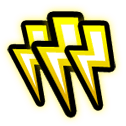
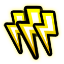
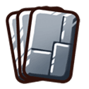
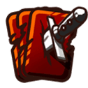
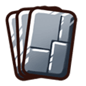
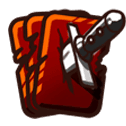
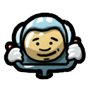
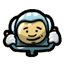

Rozgrywka online
Konto online
Jeśli chcesz wziąć udział w rozgrywce online, musisz założyć specjalne konto online. Stuknij w przycisk w lewej górnej części kokpitu, obok Twojego portretu.
Zielona kropka przy Twoim koncie online oznacza, że jesteś połączony/a z serwerem. Stuknij w nią, jeśli chcesz coś zmienić lub się rozłączyć.
Lobby gier online
W głównym menu kliknij przycisk „Gra wieloosobowa”, a następnie „Gra online”. W ten sposób przejdziesz do lobby gier online.

Po prawej stronie ekranu znajduje się lista gier, do których możesz dołączyć. Gdy stukniesz w którąś z gier, po lewej stronie ekranu wyświetlą się szczegółowe informacje na jej temat.

Na podglądzie i na ekranie szczegółowych informacji znajdziesz nazwę gry, a także jej ustawienia:


 



  
 

 

Stuknięcie w ikonkę na ekranie szczegółowych informacji wyświetli więcej informacji o danym ustawieniu.
Znajduje się tu również lista graczy i wolnych miejsc. Numer nad graczem wskazuje na jego rangę, a znajdująca się pod spodem kolorowa ikonka na jego status online:
- Gracz w lobby jest gotowy do gry.
- Gracz ma uruchomioną aplikację, ale nie znajduje się obecnie w lobby.
- Gracz nie ma uruchomionej aplikacji.
Możesz dołączyć do gry, klikając w przycisk „Dołącz do gry”. Jeśli się rozmyślisz, możesz opuścić grę przed jej rozpoczęciem, klikając w przycisk „Opuść grę”.
Uwaga! Naraz możesz rozgrywać tylko jedną grę online w trybie czasu rzeczywistego. Kiedy gra się rozpocznie, musisz być gotów/gotowa. Opuszczenie lobby oznacza opuszczenie gry w trybie czasu rzeczywistego. Z kolei w trybie turowym możesz rozgrywać jednocześnie dowolną liczbę gier.
Stwórz nową grę
Jeśli sam/a chcesz rozpocząć nową grę, kliknij w przycisk „Nowa gra” w prawym górnym rogu ekranu.
Możesz wybrać nazwę dla swojej gry i ustawić wspomniane wcześniej opcje.
Możesz również ustalić liczbę graczy. Pierwsze dwa miejsca są obowiązkowe (w Twojej grze zawsze musi znaleźć się przynajmniej jeden inny gracz). Pozostałe miejsca możesz oznaczyć jako „wymagane” albo zamknięte”. Miejsca te są „opcjonalne” – inni gracze mogą się dołączyć, ale gra może się rozpocząć bez nich.
Kiedy stukniesz w przycisk „Stwórz grę”, gra zostanie dodana do listy gier – inni gracze będą mogli ją zobaczyć i do niej dołączyć. W tym momencie nie możesz już zmieniać ustawień gry.
Tylko gracz, który stworzył grę, może ją rozpocząć (klikając w przycisk „Rozpocznij grę”) lub ją skasować („Skasuj grę”).
Lista Twoich gier
W górnej części ekranu lobby znajduje się lista wszystkich Twoich aktywnych gier. Jeśli rozpoczęła się Twoja tura, obok nazwy gry zostanie wyświetlony czerwony wykrzyknik i odliczanie. Jeśli odliczanie ma kolor czerwony, Twój czas na daną turę się wyczerpał – teraz upływa czas rezerwowy przeznaczony na całą grę. Jeśli i ten czas się skończy, zostaniesz usunięty/a z gry, a Twoje miejsce zajmie bot AI.
Stukając w grę, możesz podejrzeć szczegółowe informacje na jej temat. Możesz wejść do danej gry, klikając w przycisk „Wczytaj grę”.
Ukończone gry będą figurować na szaro. Znikną z listy, gdy zapoznasz się z wynikami.
Jeśli nie chcesz kontynuować danej gry, potraktuj innych graczy z szacunkiem – wejdź do gry po raz ostatni i kliknij w przycisk „Zrezygnuj z tego lotu” w menu. Dzięki temu pozostali nie będą musieli czekać, aż Twój czas upłynie.
Ekran wyników
Po zakończeniu każdej gry online zobaczysz ekran wyników, z którego dowiesz się, ile punktów doświadczenia zdobyłeś/aś:
Ranga
Po zakończeniu gry otrzymasz pewną liczbę punktów doświadczenia. Jeśli masz odpowiednią liczbę punków doświadczenia, awansujesz i zdobędziesz wyższą rangę!
Wskazówka: Jeśli masz niską rangę, otrzymasz sporo doświadczenia, po prostu grając w grę. Kiedy będziesz mieć wyższą rangę, do awansu będziesz potrzebować znacznie więcej punktów doświadczenia. Najlepszym sposobem na ich zdobycie jest pokonanie graczy o wysokich rangach.